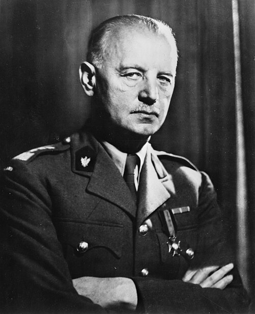

Władysław Sikorski
General, primer ministro del gobierno polaco en el exilio y comandante en jefe de las fuerzas armadas polacas durante la guerra. Mantuvo viva la causa de una Polonia libre pese a la ocupación de su país.
Datos
| Nombre completo | Władysław Eugeniusz Sikorski |
|---|---|
| Nacimiento | 20 de mayo de 1881, Tuszów Narodowy (entonces Imperio austrohúngaro) |
| Fallecimiento | 4 de julio de 1943, Gibraltar (accidente aéreo) |
| Cargo | Primer ministro del gobierno polaco en el exilio y comandante en jefe (1939-1943) |
| Rama | General del Ejército polaco |
Orígenes y primeros años
Władysław Sikorski nació en 1881 en la parte de Polonia entonces bajo dominio austrohúngaro, en una época en la que el país no existía como Estado, repartido desde el siglo XVIII entre Rusia, Prusia y Austria. Se formó como ingeniero, pero pronto se involucró en las organizaciones patrióticas y militares que trabajaban por la independencia polaca. Participó en la creación de fuerzas paramilitares y colaboró, aunque con tensiones, con Józef Piłsudski, la gran figura del nacionalismo polaco.
La independencia de Polonia
Al recuperar Polonia su independencia tras la Primera Guerra Mundial, Sikorski se distinguió como oficial en la guerra polaco-soviética de 1919-1921, en la que la joven república rechazó el avance del Ejército Rojo. Fue una figura destacada del nuevo Estado, llegando a ser jefe del Estado Mayor y, brevemente, primer ministro a mediados de los años veinte.
Sin embargo, tras el golpe de Estado de Piłsudski en 1926, Sikorski, crítico con el régimen autoritario resultante, quedó apartado de los puestos de responsabilidad durante más de una década, dedicándose a escribir y a estudiar cuestiones militares, a menudo en Francia.
La catástrofe de 1939 y el gobierno en el exilio
La invasión de Polonia por Alemania y la Unión Soviética en septiembre de 1939 supuso la desaparición del Estado polaco. Con el gobierno anterior desacreditado por la derrota e internado en Rumanía, Sikorski emergió como la figura de consenso para liderar la continuación de la lucha. Asumió la jefatura del gobierno polaco en el exilio —primero en Francia y, tras la caída de esta en 1940, en Londres— y el mando supremo de las fuerzas armadas polacas.
El ejército polaco en todos los frentes
Sikorski logró algo notable: reorganizar en el exilio a los numerosos soldados polacos que habían escapado de la ocupación, formando unas fuerzas armadas que combatirían junto a los Aliados en prácticamente todos los frentes europeos. Pilotos polacos brillaron en la Batalla de Inglaterra (el famoso Escuadrón 303); tropas polacas lucharon en el Norte de África, tomaron el monasterio de Montecassino en Italia y combatieron en Arnhem y en la campaña de Europa occidental. La marina y la inteligencia polacas también hicieron contribuciones destacadas a la causa aliada.
Al mismo tiempo, dentro de la Polonia ocupada se desarrolló un vasto Estado clandestino y un Ejército Nacional (Armia Krajowa) que respondía al gobierno en el exilio, uno de los movimientos de resistencia más importantes de Europa.
Las difíciles relaciones con la URSS
La posición de Sikorski era enormemente complicada. Cuando Alemania invadió la Unión Soviética en 1941, la URSS pasó de ser coagresora de Polonia a aliada de los Aliados occidentales. Sikorski, con gran pragmatismo, restableció relaciones con Moscú y negoció la liberación de miles de polacos deportados a la URSS, con los que se formó un ejército (el ejército de Anders) que acabaría combatiendo con los británicos.
Pero las relaciones se rompieron en abril de 1943, cuando los alemanes descubrieron las fosas de la masacre de Katyn, donde miles de oficiales polacos habían sido asesinados por los soviéticos en 1940. Cuando el gobierno de Sikorski pidió una investigación internacional, Stalin rompió relaciones, acusándole de hacer el juego a la propaganda nazi. La cuestión del destino de Polonia enfrentaba ya los intereses soviéticos y los de los polacos libres.
La muerte en Gibraltar
El 4 de julio de 1943, el avión en el que viajaba Sikorski se estrelló en el mar poco después de despegar de Gibraltar, muriendo casi todos sus ocupantes. Su muerte, en un momento tan delicado, privó a la causa polaca de su líder más respetado y capaz de mediar entre los intereses aliados. Las circunstancias exactas del accidente han sido objeto de investigaciones y de diversas teorías a lo largo de los años.
Legado y valoración histórica
Władysław Sikorski es recordado como el gran líder de la Polonia libre durante la guerra y como símbolo de la determinación polaca de seguir luchando pese a la ocupación de su territorio por dos potencias. Su desaparición debilitó la posición de Polonia justo cuando se decidía su futuro, y el país acabaría cayendo bajo la esfera soviética tras la guerra, un desenlace amargo para quienes tanto habían combatido. Su figura es honrada en Polonia como la de un patriota íntegro y un estadista en circunstancias trágicas.
← Volver a Líderes